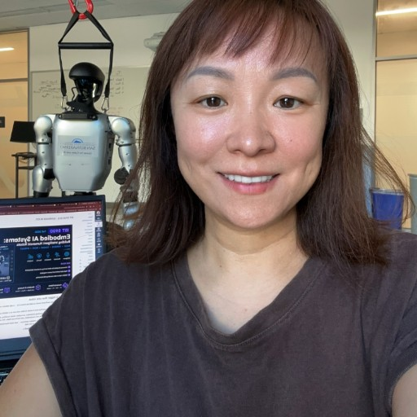

SB01 — Unitree G1 Conversation
Real-time voice conversation system for a humanoid robot: on-device ASR, Claude reasoning, Edge TTS, and face-recognition-driven memory — all running live on the G1.

Research & Engineering Portfolio
Embodied AI Engineer & Robotics Researcher
Yutong Liu is an Adjunct Faculty member in the Information Systems and Technology (IST) Program at California State University, San Bernardino.
She specializes in Embodied AI, combining robotics, machine learning, computer vision, motion capture, digital humans, and immersive technologies to build intelligent systems that can perceive, communicate, and learn from the physical world.
At CSUSB, she serves as the Lead of the Motion Capture Studio, supporting interdisciplinary research and teaching in human movement analysis, virtual production, digital humans, and robotics.
Her experience includes:
In her courses, students learn by building real AI applications—from digital humans to intelligent robots—using modern industry tools and research platforms. No robotics experience is required—just curiosity and a willingness to learn.
Real-time voice conversation system for a humanoid robot: on-device ASR, Claude reasoning, Edge TTS, and face-recognition-driven memory — all running live on the G1.
Motion-capture-to-humanoid retargeting pipeline: converts Qualisys mocap FBX exports into G1 joint angles via Blender + GMR inverse kinematics, previewed in MuJoCo.
Type a text prompt and watch the Unitree G1 perform it: TEXEDO text-conditioned motion generation feeding NVIDIA's GR00T SONIC whole-body controller in MuJoCo sim2sim, with joint-activity analysis and saved verified motions.
The Unitree G1 swings a kendama ball up and catches it in the big cup, in MuJoCo: open-loop swing-up plus a closed-loop catch, tuned by CEM search with the arm in the loop, holding the ken in a custom 3D-printed fist. 30/30 catches under 3% parameter jitter and up to 5 mm camera noise.
More projects in perception and simulation are in progress and will be added here.
AI (MDPI), Vol. 6, Issue 7, Article 158 — July 2025